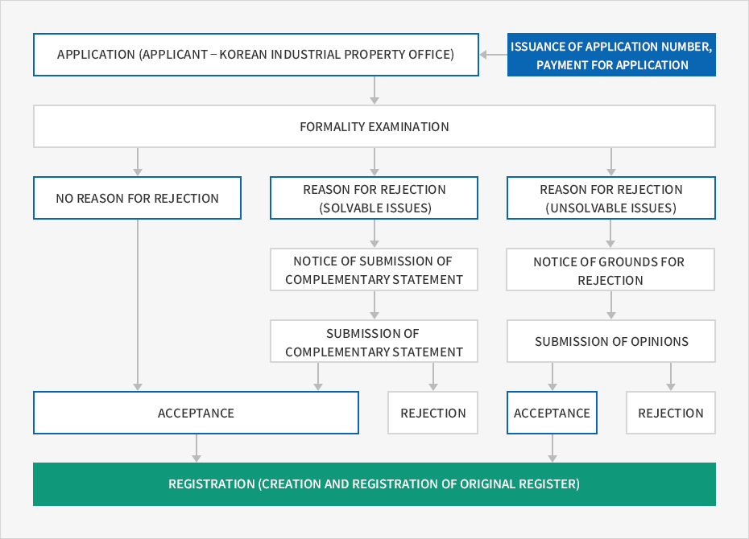
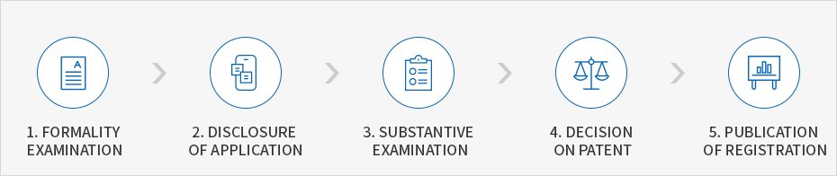
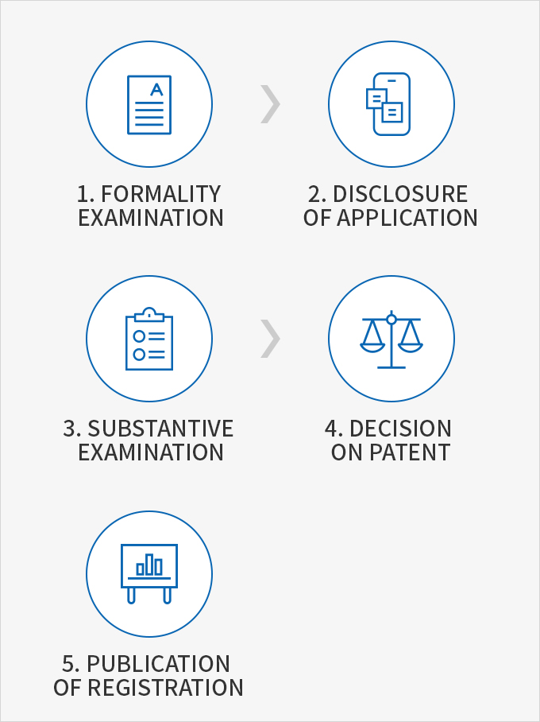

Intellectual Property System
- Home
- Management·Living
- Intellectual Property Rights
- Intellectual Property System
Intellectual property rights are classified into industrial property rights, copyrights, and new intellectual property rights. Industrial property rights consist of patent rights, utility model rights, design rights, and trademark rights. This text focuses on industrial property rights that are applied to general companies.
Industrial Property Rights
Registration of industrial property rights refers to the recording of the occurrence, change, extinction, and other certain matters concerning patent rights in the original (registration) register, which is placed in the Korean Industrial Property Office (KIPO). The original register is a public book placed in the KIPO in order to record the matters to be registered as prescribed by the act and the commissioner of the KIPO.
Term of Existence
| Patent Rights | Utility Model | Design Rights | Trademark Rights |
|---|---|---|---|
| From the registration date to 20 years after the application date | From the registration date to 10 years after the application date | From the registration date to 20 years after the application date | From the registration date to 10 years thereafter |
| * Renewable every 10 years, semi-permanent right |
Procedures of registration


- ISSUANCE OF APPLICATION NUMBER, PAYMENT FOR APPLICATION
- APPLICATION (APPLICANT - KOREAN INDUSTRIAL PROPERTY OFFICE)
-
FORMALITY EXAMINATION
-
NO REASON FOR REJECTION
- ACCEPTANCE
- REGISTRATION CREATION AND REGISTRATION OF ORIGINAL REGISTER)
-
REASON FOR REJECTION (SOLVABLE ISSUES)
- NOTICE OF SUBMISSION OF COMPLEMENTARY STATEMENT
- SUBMISSION OF COMPLEMENTARY STATEMENT(REJECTION)
- ACCEPTANCE
- REGISTRATION CREATION AND REGISTRATION OF ORIGINAL REGISTER)
-
REASON FOR REJECTION (UNSOLVABLE ISSUES)
- NOTICE OF GROUNDS FOR REJECTION
- SUBMISSION OF OPINIONS(REJECTION)
- ACCEPTANCE
- REGISTRATION CREATION AND REGISTRATION OF ORIGINAL REGISTER)
-
NO REASON FOR REJECTION

Patent Rights
The patent right system has been established to promote the development of the national industry by protecting and fostering inventions, and to this end, the system grants patent rights in return for the disclosure of technologies. The right is effective only within the countries which have obtained such a right. Korea adopts a first-to-file rule that grants patent rights to the first applicants.
Main Procedures for Patent Application


- Formality Examination
- Disclosure of Application
- Substantive Examination
- Decision on Patent
- Publication of Registration

- A formality examination is conducted to check whether there are any defects in the process of filling in essential details in a form, compliance with deadline, attachment of certificates, payment of fees, etc.
- The disclosure of application refers to a system by which the Korean Intellectual Property Office discloses the details of the technology concerned to the public one and a half years after the application date to prevent delays in the examination and consequential disclosure of technologies for which an application has been submitted.
- A substantive examination is conducted to review the patent requirements of the technology such as industrial applicability, novelty, and inventiveness. As a patent is granted on condition of disclosure, the examination also focuses on whether the application is easily comprehensible to the public.
- A decision is made to grant a patent when the application meets certain patent requirements.
- Upon the decision to grant a patent, the applicant pays a registration fee to register the patent. From that point, the patent right enters into effect and the registered application for the patent will be published and disclosed to the public.
Method of Patent Application
| Method | Electronic Application | Paper Application | |
|---|---|---|---|
| Online | Post | Office Visit | |
| Details | Submit an application using software for electronic documents | Fill in a paper application form and send it to the Korea Intellectual Property Office by mail | Submit an application by visiting the office |
| Place for application | www.patent.go.kr ▶ patent application ▶ application in Korea ▶ installation of software for electronic documents www.patent.go.kr | Director of Korea Intellectual Property Office, Government Complex-Daejeon, 189, Cheongsa-ro, Seo-gu, Daejeon 35208, Republic of Korea | Customer Service Center for Patent in the Korea Intellectual Property Office (Daejeon), Seoul branch of the Korea Intellectual Property Office (Seoul) |
| Time of receipt | Available 24 hours from Monday to Saturday and 09:00-21:00 on Sundays and holidays | The imprinted date from the post office is considered the application date. (The date of arrival at the Korea Intellectual Property Office is deemed as the application date for PCT international applications) | 09:00-18:00 (09:00-13:00 on Saturdays and during the winter season) |